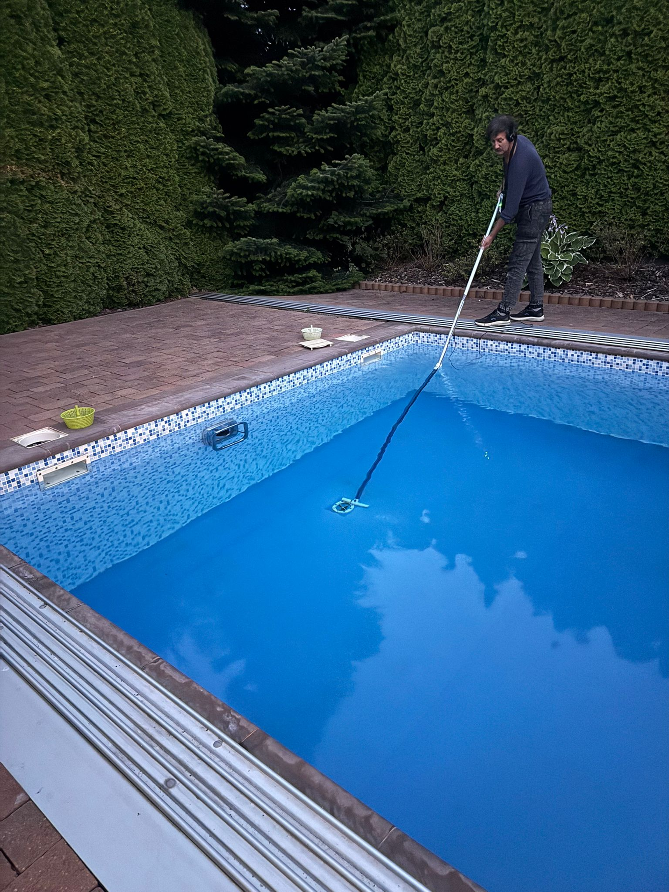
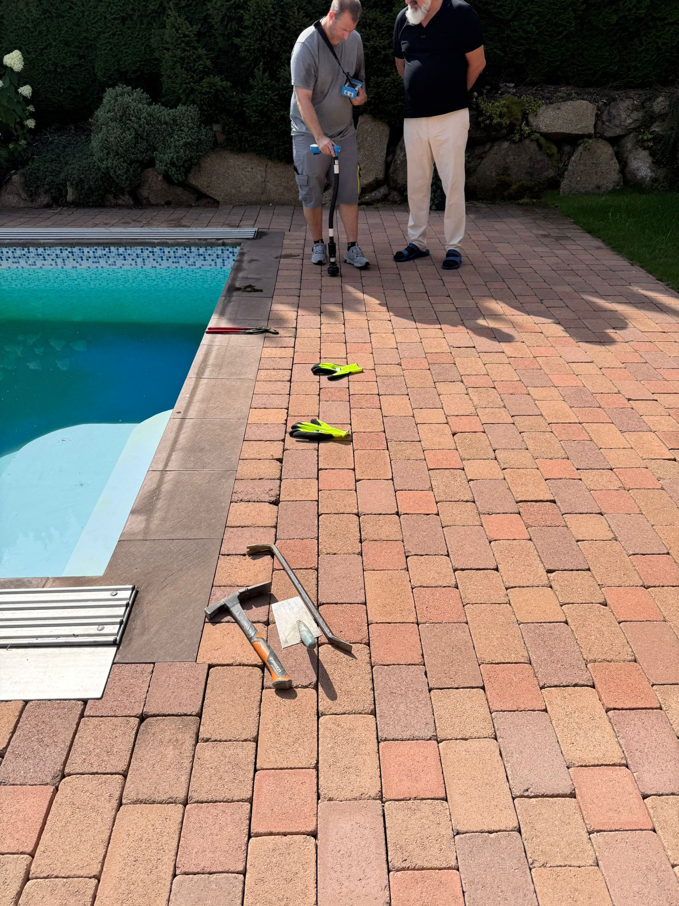
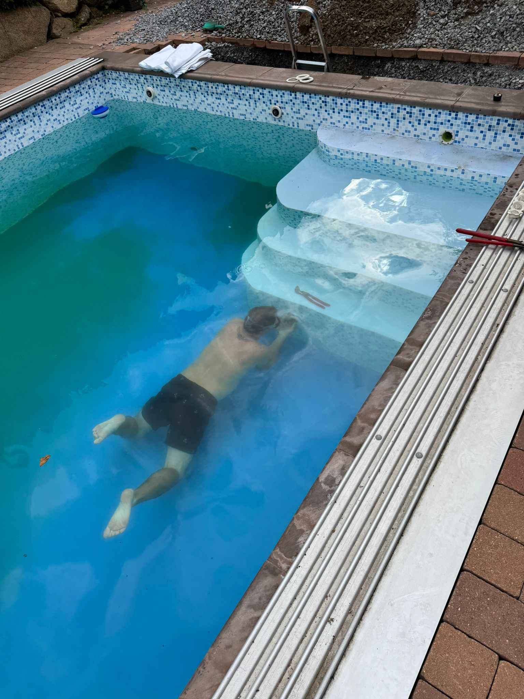
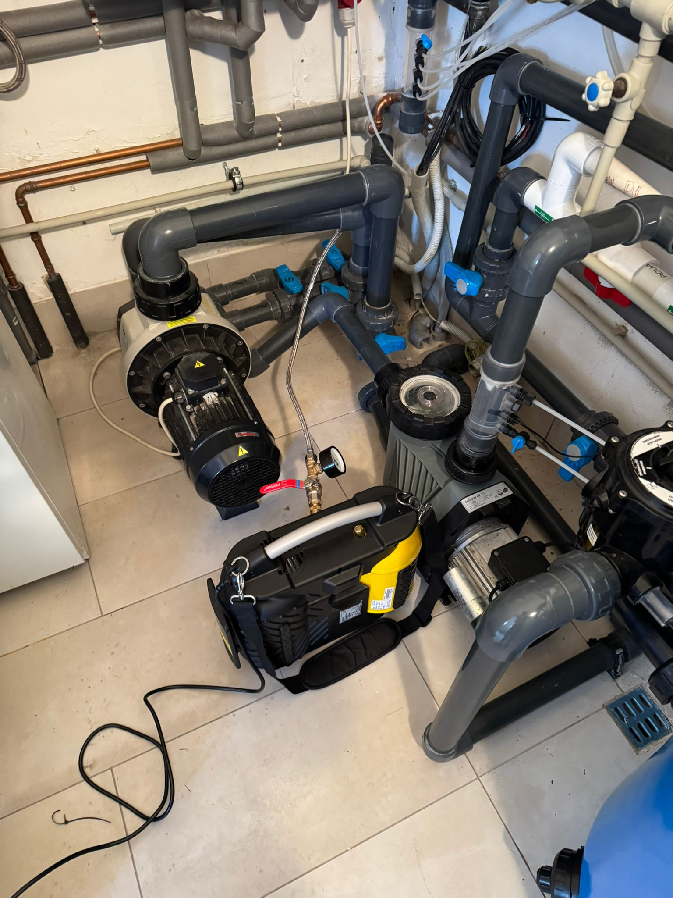

Ztrácíte vodu?
Najdeme kde.
Profesionální diagnostika úniku vody — přesně, rychle a bez zbytečného bourání.
Nenápadný problém,
zbytečné náklady
Únik vody v bazénu bývá zpočátku neviditelný — ale každý den ztrácíte vodu, energii na ohřev i peníze. Včasná diagnostika zabrání poškození konstrukce a ušetří náklady na opravu.
Používáme moderní metody včetně potápěčské inspekce, které odhalí i skryté netěsnosti bez nutnosti vypouštět bazén.

Proč diagnostiku neodkládat
Úspora vody a energie
Zbytečné dopouštění a ohřev ztracené vody prodražují provoz bazénu každý den.
Ochrana konstrukce
Vlhkost pronikající do okolí bazénu poškozuje základy, izolaci i okolní dlažbu.
Rychlé a přesné řešení
Moderní diagnostikou přesně určíme místo úniku a navrhneme opravu na míru.
Jak diagnostika probíhá

Vizuální kontrola a měření
Nejprve provedeme vizuální prohlídku bazénu a okolí. Změříme hladinu vody a vyhodnotíme rychlost poklesu, abychom potvrdili, že jde skutečně o únik a ne o výpar.

Potápěčská inspekce
Náš technik provede podvodní inspekci dna, stěn, prostupů a technologických prvků. Tato metoda odhalí i skryté netěsnosti bez nutnosti bazén vypustit.

Lokalizace a návrh opravy
Po přesné lokalizaci úniku zpracujeme návrh opravy. Opravu provedeme na místě nebo naplánujeme v rámci servisní návštěvy — podle rozsahu poškození.
Z našich realizací
Reálné případy — diagnostika i opravy úniku vody
{kind=link}
{kind=link}
{kind=link}
{kind=link}
{kind=link}
{kind=link}
{kind=link}
Máte podezření na únik vody?
Neodkládejte to. Čím dřív problém zachytíme, tím jednodušší a levnější bude oprava.
Objednat diagnostiku →